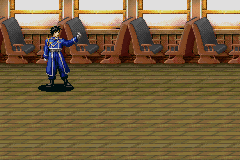

Hagane no Renkinjutsushi - Meisou no Rondo (Japan)
Stateless / Passcode Debug Menu Patch
Cartridge Identity
- Game Code
BHRJ(FamilyBHR)- Header Title
HAGANERONDO- Maker / Revision
B2/ rev0- ROM Size
- 8.0 MiB (8,388,608 B)
- Save Media
None / Unknown- SHA-256
49df5e9e128302733fb1465104153923a4a5c0ef36efd8b77a0006bbc0a629d8- Engine / SDK Group
comm-001(196 families)
Screenshots


Debug Menu Re-Enablement Patch (.ips)
Download BHRJ-debug.ips (29 B IPS / 16 B delta)
- Hook Mechanism
scene_descriptor_table_override· Patch scene table at 0x0817D8A8 (slot 1) with slot 0 debug menu descriptor [DEBUG MENU] (16 bytes)- IPS SHA-256
2600be4b0fd1a9aadfef604737a69bd125e4a98501870ab9195c361cc5979e39
gbakit patch apply BHRJ-debug.ips original.gba patched-debug.gba

Cartridge Storage Architecture: Stateless / Passcode
Zero non-volatile battery hardware: This cartridge PCB contains ROM only (no SRAM, Flash, or EEPROM chips). Progression is preserved via on-screen passcodes or session-only gameplay. No
.sav file is generated or required.
ROM Assets, Compression & Audio
- BIOS Compression
- LZ77 (
0x10): 402 streams · RLE (0x30): 786 streams - ROM Pointer Tables
- 69 tables (0 pointing to validated compressed streams)
- SDK Backup Tags
EEPROM_V124
Hardware MMIO Subsystems
ppu_display0x802d8b4,0x803eac4,0x80472f4,0x8056ee0,0x8059034